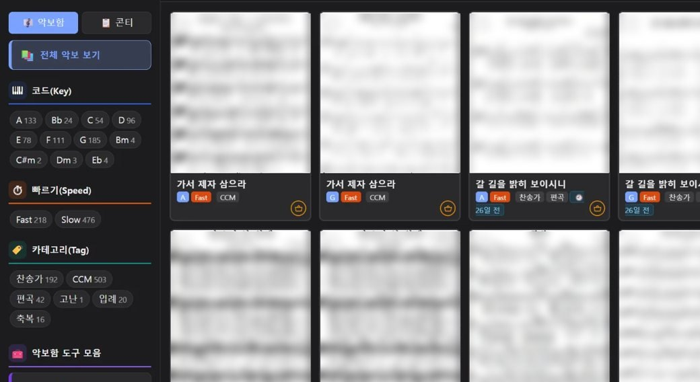
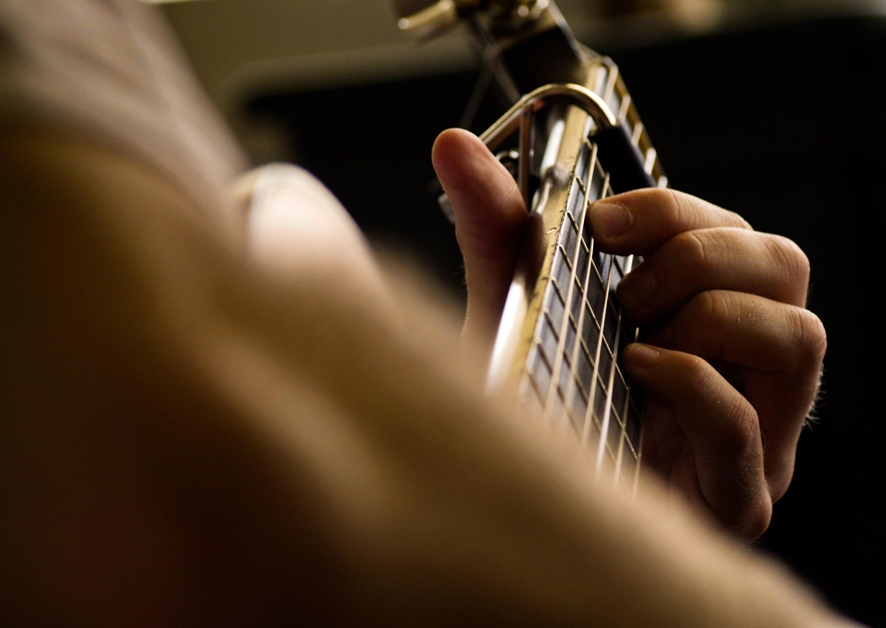
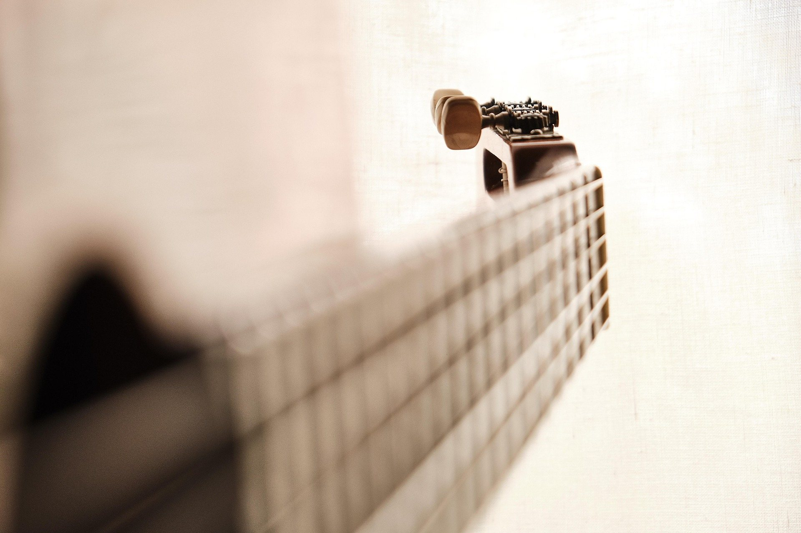
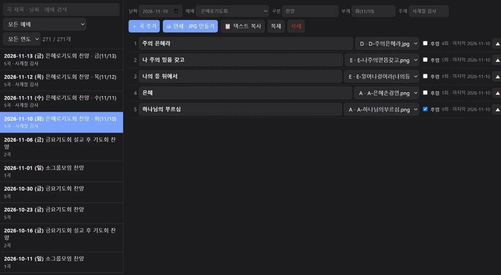
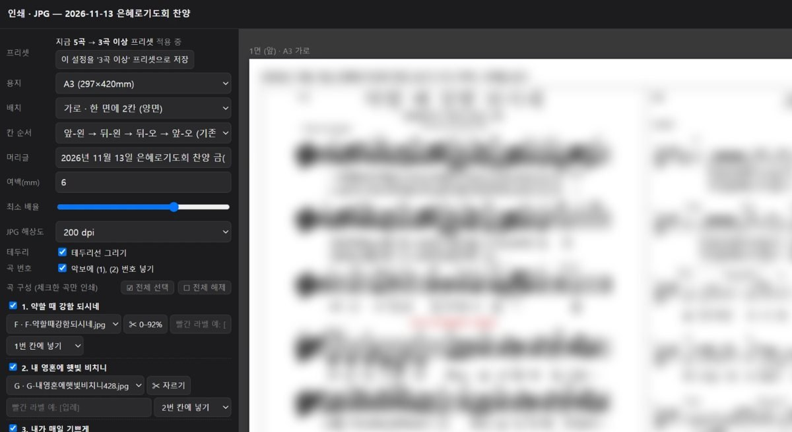
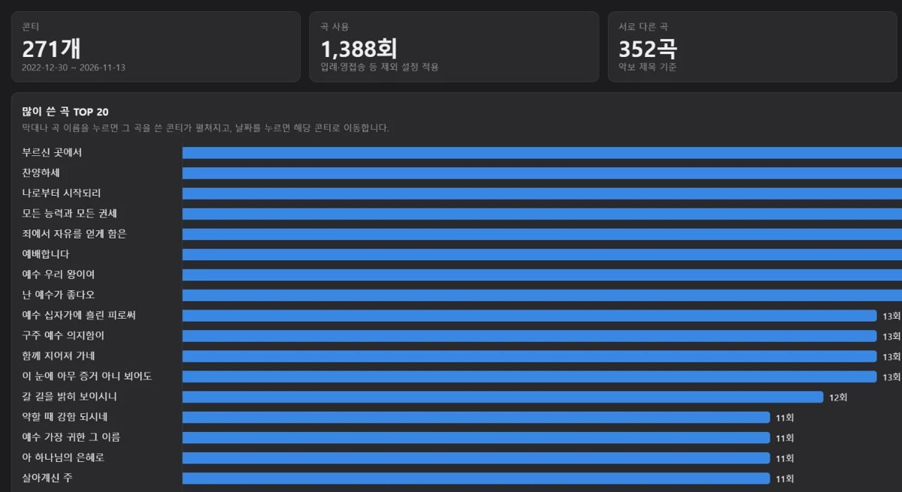
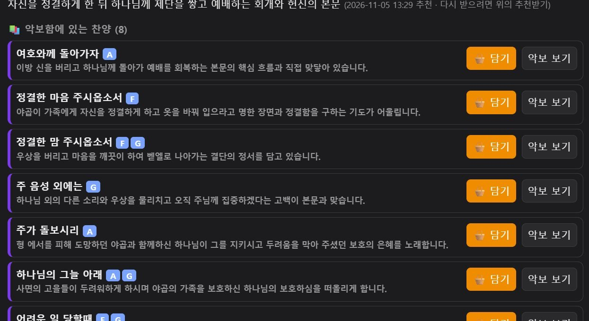
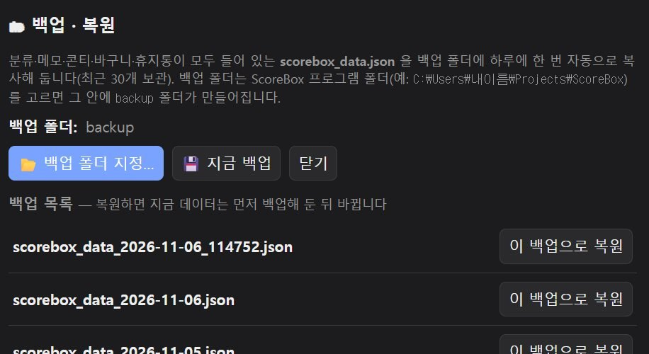
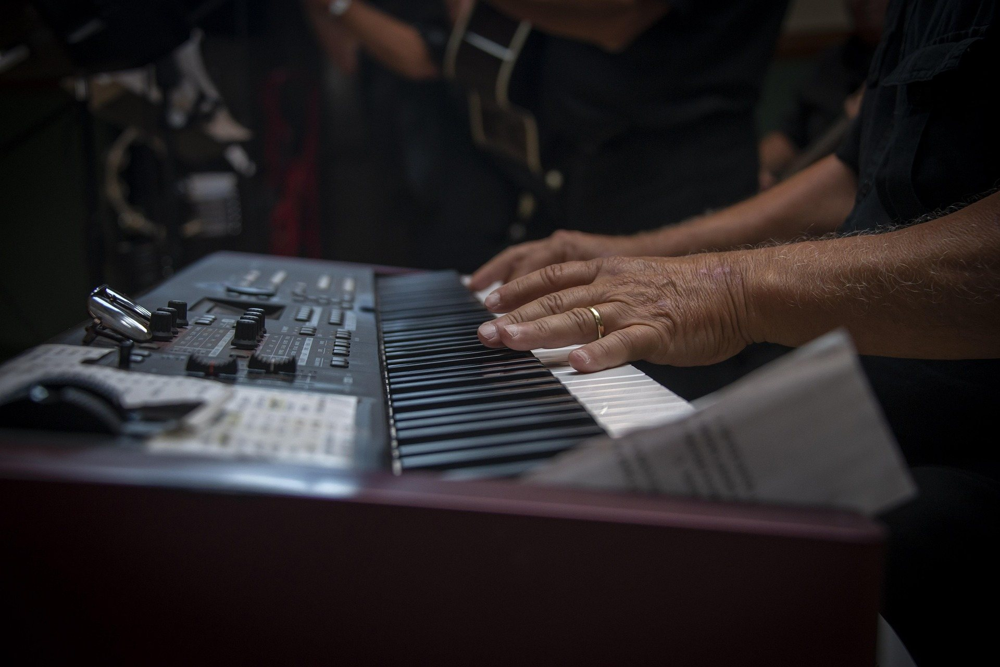

악보함
코드·빠르기·카테고리로 찾고,
중복 곡도 한 번에 정리합니다.

예배인도자를 위한 무료 악보 정리·콘티 도구. PC의 Chrome 브라우저(Edge도 가능)에서 바로 열립니다.
다운로드(무료)실제 ScoreBox와 같은 방식입니다.
악보를 누르면 콘티에 담기고,
한 번에 카톡용 글로 복사됩니다.
악보 그림은 흐리게 처리한 예시입니다. 실제로는 내 PC에 있는 악보 이미지가 그대로 카드가 됩니다.
하위 폴더는 카테고리가 되고, 파일 이름의 코드(G, A, E, Am)는 알아서 읽습니다.
날짜와 예배를 정하고, 곡 순서와 쓸 악보를 고르세요.
지난 콘티는 통계로 모아 보여 줍니다.
A3·B4·A4, 한 면에 1~3칸 설정 가능하고, 악보를 자르고
크기를 맞춰 바로 인쇄하거나 JPG로 저장합니다.


코드·빠르기·카테고리로 찾고,
중복 곡도 한 번에 정리합니다.

날짜·예배별로 콘티 바구니를 통해
한 번에 콘티를 제작합니다.

콘티에서 악보의 배치 및 구성을 하고
악보 크기를 자유롭게 조절하며
jpg 파일로 저장도 합니다.

많이 사용한 곡과 사용하지 않은 곡,
예배별 비율 및
전체적인 통계를 살펴봅니다.

성경 본문을 고르면
어울리는 찬양을 추천합니다.
(AI API Key가 필요합니다.)

하루 한 번 자동으로 백업하며,
클릭 한 번으로 복원됩니다.
